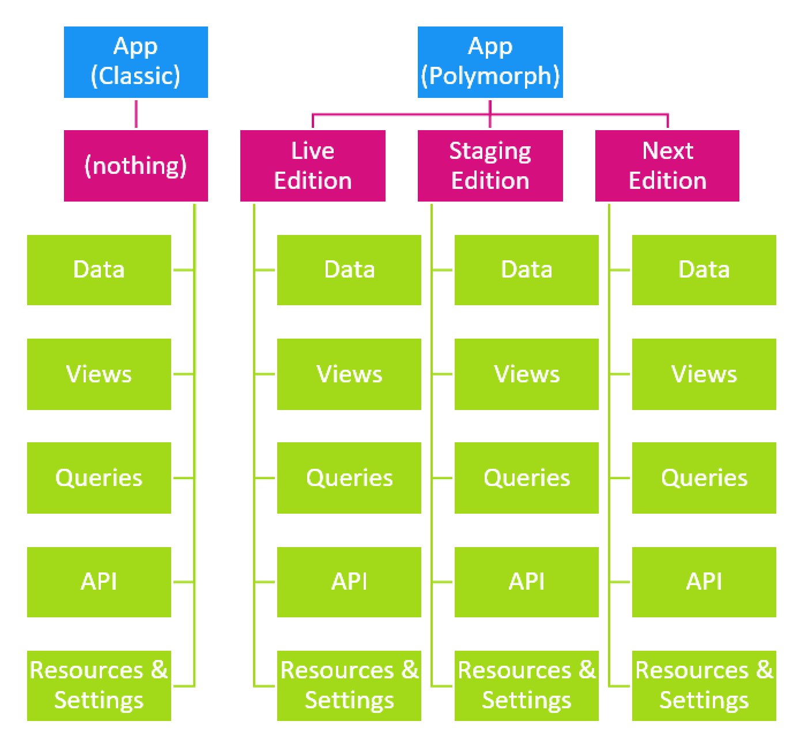

Polymorphism aka Open-Heart-Surgery
Tip
The key concept behind Polymorphism is having the same template and code in various editions (morphs) which are automatically used based on certain rules.
Polymorphism Addresses 3 Problems
#1 Workin on Live Sites aka Open-Heart-Surgery
Imagine you have a running system and you want to make some changes on the live installation. During the time you work, you would always risk breaking the site, but we usually don't have the time to create a staging environment.
#2 Creating Templates that work with Multiple CSS-Frameworks
When the same design must work in various CSS-Frameworks, you actually need different templates for each - and switching between them must be automatic.
#3 A/B Testing
In marketing, we want to test various design with different audiences and measure what works best.
Polymorph Folder Structure
Let's compare the perfect multi-edition (polymorph) setup to the classic solution:
Note
Automatic View-Polymorphism replaces the manual approach for CSS-Framework and common Open-Heart-Surgery scenarios. The manual approach is still recommended for complex polymorphism as well as A/B Testing.
View Polymorphism
Automatic View Polymorphism based on CSS-Framework
The system is fairly easy to understand. So if polymorphism is activated for CSS-Framework detection, here are the rules:
- The default template file is the one configured in the view configuration
- 2sxc will try to find file with the matching name in 2 locations using the name of css framework published by the skin in the koi.json
- beneath the current folder
- in the app root folder
- If nothing is found, the default template file is used
If a match is found, it will load that. Note that if the theme does not have a koi.json, the code used is unk for unknown.
Here's a checklist how start using View Polymorphism with CSS-Frameworks:
Automatic View Polymorphism based on SuperUser Permissions
This is meant for Open-Heart-Surgery - so you can work on templates on a live site without breaking the output for normal users. This is how it works (if you have turned it on):
- The default template is the one configured in the view configuration
- 2sxc will try to find a file with matching name in either the
[root]/staging(for super users) or[root]/live(for normal users) - If it is found, 2sxc will render that template
- Otherwise the default template is used
Here's a checklist to get started:
Manual View Polymorphs
In case the automatic setup doesn't suit your needs, you can do it manually like this:
Razor Guide to View Polymorphism
Tip
These are just a few hints for you as you work with it.
- Don't forget to activate it in the settings
- If the Razor code ever wants to know what edition (morph) it's in, check the
CmsContext.View.Editionproperty. You would do this for things like- If you need a JS or CSS from the same folder
- If you need to link to a WebApi of the same edition
WebAPI Polymorphims
- Api Controllers are already fully polymorph. They can be placed in a subfolder like
[app-root]/live/api/WtfController.csand can be accessed using a url with the edition in the name, allowing multiple identically named controllers to be used. - Views are polymorph if you do the view selection manually. This means, you can place your views in a subfolder like
[app-root]/live/list.cshtmland then have an entry-point[app-root]/list.cshtmlwhich will choose which edition to use - then using@Html.Partial(...)to pick that edition. This is still manual, because we're not sure yet what the perfect implementation is, so we would rather wait before standardizing a bad solution. - Everything that is data (schemas, items, queries, settings and resources) is still one edition only. The data model is able to perform multi-edition content-management, but we're not ready yet to provide the UIs etc. for this, as it could lead to confusion, so we'll hold back on this for now.
How to use WebApi Polymorph
As of now, to use the WebApi Polymorp, this is what you would do:
- instead of placing your
WtfController.csin the[app-root]/api/folder, you place it in a[app-root]/live/apifolder. - the live, default JS would then access it using
[dnn-api-root]/app/auto/live/api/Wtf - You can then copy this controller to
[app-root]/dev/apiand make your changes there. - In your JS, you would then (while testing/developing) access this edition using
[dnn-api-root]/app/auto/dev/api/Wtf
without causing problems on the live solution, as all other users are still accessing theliveedition, while you're working on thedevedition. - Once everything works, deploy (copy) the now modified
WtfController.csfrom thedev/apifolder tolive/apiand all users benefit from the changes.
Data Polymorphism
Data Polymorphism has not been implemented yet. The idea would be that changes to data or even schemas (fields of a type) would be staged as we work.
For now, Data-Polymorphism is low priority, because we're not sure yet if we can "pull this off" in a way that won't confuse the users.
Read also
Demo App and further links
- The default Content Templates use CSS-Framework Polymorphism to automatically look great in Bootstrap 3 and 4
- The Mobius Forms App uses SuperUser Polymorphism so you can develop new forms in the background without breaking functionality
History
- WebAPI Polymorphims was introduced in 2sxc 9.35
- Manual View-Polymorphism was introduced in 2sxc 9.35
- Automatic View Polymorphism introduced in 2sxc 11.0 (css-frameworks and super-user)